Measurement Facilities
Back to TopThe potential application of a material for use in a Radiation Portal Monitor (RPM) can be evaluated by measurements of the detector's sensitivity to gammas and the detector's response to neutrons. A detector material might be a possible replacement if the there exists a neutron response that can be differentiated from photons for given sensitivity of gammas, namely 1 in a million. A simple way to discriminate between gammas and neutrons is to use a pulse height discriminator, above which the detector detector will only record one photon out a million as a neutron. Under this framework it is then possible to develop a mathematical lower level discriminator (MLLD) of the pulse height spectrum to function as this pulse height discriminator, and to then formulate the sensitivity requirement as the gamma intrinsic efficiency as a function of MLLD.
The performance of a given detector is first characterized by measurement of its light yield and neutron sensitivity in the characterization laboratory. Samples are characterized based on their pulse height spectra from a variety of sources, most notably 36-Cl, 60-Co, 241-Am, and shielded 252-Cf. There is the capability to measure solid samples and liquid samples in 5 mL vials. The samples are coupled to a PMT with silicon based optical grease. The PMT signal is them amplified with a pre amplifier and amplifier, with the amplified signal being digitalized with an ADC-MCB and the MAESTRO software.
A gamma irradiator was designed and built in order to effectively measure the response of a film to a 10 mR/hr gamma field with high statistics. The source currently employed in the gamma irradiator is a 100 uCi Co-60 source (1/1/2012).
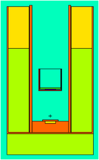
MCNP Rendering of the gamma irridiator.
The neutron irradiator is a custom built 0.59 micron 252-Cf source encased in 2 inch blocks of high density polyethylene (HDPE). There are two detector detector wells, one surrounded by a 1/16 inch cadmium to shield out thermal neutrons, and another surrounded by 1/16 inch of lead to shield out amount of gammaÕs as the cadmium well.
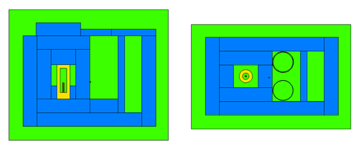
Figure 1 MCNP Rendering of the Neutron Irridiatior. The source is the red cyclinder
Spectra Processing
Significant post processing of the spectra is completed in the MATLAB environment in order to calculate the intrinsic efficiency of a given detector. The steps are as follows:
1. The data is imported into MATLAB
2. Spectra are normalized to a set gain value, and normalized by their count times. Rebinning maybe be performed if necessary
3. The absolute intrinsic efficiency is computed (for the neutrons and photons) as a function LLD, given the number of radiation crossing the film from the MCNPX simulation. This is expressed mathematically as (1), where x is the channel number, 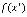 is the spectra as a function of channel number, and 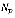is the number of particles of type  crossing the detector.
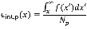
For a MCNPX simulation, the calculation of the intrinsic neutron efficiency would have the form:
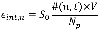
The algorithm is implemented such that if the error on the integral counts exceeds a certain threshold typically set to 50% (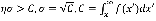), then the integration is stopped and the intrinsic efficiency is set to zero for all channels after the channel at which the error exceeded the threshold of the counts.
4. The LLD level at which 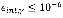 is calculated. This is found by just search the 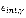vector for the first value that is less than 10-6, and then a key-value lookup in order to find the corresponding channel.
5. The LLD at which 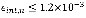 is calculated. This is found by just search the 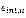vector for the first value that is less than 10-6, and then a key-value lookup in order to find the corresponding channel. The LLD finding is the same method for both the gamma and the neutrons, but called with different arguments.
6. The count rate for neutrons above the gamma LLD are calculated. This is found by summing the neutron spectra above the gamma LLD.
Scripts have been developed in MATLAB to automate this process. The main script is NGDiscrim. Called with no arguments it prompts the user to choose a neutron spectra, a gamma spectra, and the geometry. It then calculates the intrinsic efficiencies. Each of the scripts are well documented (i.e. typing >help NGDiscrim) so that anyone familiar with the MATLAB environment should have no trouble using them. Helper scripts are also available, the most common are importSPE and processSPE which used in conjunction with each other plot data in the SPE format.
Example Results
Back to TopThe following figures show the measured spectra of the detectors for neutrons and gammas. It is clear that the EJ-254 (boron loaded plastic) detectors will have poor performance because of their large gamma response. The EJ-426 (LiF:ZnS(Ag)) has the lowest response, and it is not clear if the tail of the spectra is due to actual counts or background. In the neutron spectra it was decided to only plot the performance of the best EJ-254. It is observed that the LiF:ZnS(Ag) is much brighter than the other films, and it is noted that the post processed composite PEN has a higher light output than the commercial EJ-254 (based on the peak location).

The performance of the UT fabricated detectors are shown in the following figure where they are compared to GS20.

Measured Light Yield
The average channel number of the neutron and gamma spectra of each detector was calculated. Eljen publishes the light yield for the 1% boron as 9,200 photons per MeVee, 8,600 photons per MeVee for the 2.5% boron, and 7,500 photons per MeVee for the 5% boron which, is in agreement with our measured values. C.W.E van Eijk has published the light yield of LiF:ZnS as 75,000 photons per MeVee, which is close to our measured value of 72,000 photons per MeVee.
| Sample | Photons per MeVee | Photons per Neutron |
|---|---|---|
| EJ 254 2.5%, 1/4 inch | 8,100 | 640 |
| EJ 254 1%, 1/4 inch | 9,500 | 780 |
| EJ 254 5%, 3/4 inch | 7,800 | 479 |
| EJ 426 HD2 | 72,000 | 24,000 |
| GS20 | 3,800 | 6,240 |
| PS Film | 1,400 | 2,000 |
The following table shows the discrimination performance of the tested detectors.
| Sample | Count Rate Above Discriminator per Absorber Mass |
|---|---|
| EJ 254, 2.5% B, 1/4 inch | 0.20 cps per mg |
| EJ 254, 1% B, 1/4 inch | 0.05 cps per mg |
| EJ 254, 5% B, 3/4 inch | 0.03 cps per mg |
| EJ 426 HD2 | 1.97 cps per mg |
| GS20 | 0.56 cps per mg |
| PS, 50 microns | 2.15 cps per mg |
The University of Tennessee, Knoxville. Big Orange. Big Ideas.
Knoxville, Tennessee 37996 | 865-974-1000
The flagship campus of the University of Tennessee System